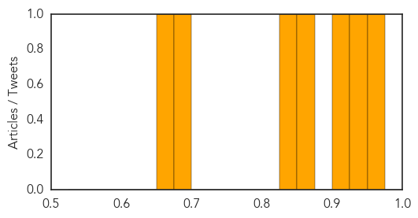

Ebola
30-Day Web Trend
0 alerts, 0 warnings

30-Day Twitter Trend
0 alerts, 0 warnings

Article Locations

Article Confidences

Top Articles:
- 0.982
- Philippines suspends macaque exports after 11 monkeys die of Ebola
- 0.981
- Akon, Angelique Kidjo, Fally Ipupa, Wax Dey. Magasco And More Artists Coming Together To Demand Action On Ebola
- 0.980
- Sierra Leone records 5th Ebola case - Xinhua
- 0.953
- Hajj – The Express Tribune Blog
- 0.938
- Medical crimes commited to depopulate Africa
- 0.930
- Philstar Mobile
- 0.903
- New Ebola test may help stop epidemic in West Africa
- 0.785
- LIBERIA: Save The Children Pledges To Sustain Partnership In Ebola Fight
- 0.781
- Welcome to the Expotimes News
- 0.769
- Dr. Kandeh Yumkella’s membership findings released & SLPP Scribe Reacts
- 0.750
- African scientists funded to seek cures
- 0.667
- $70 Million Funded For African Scientists to Raise the Quality of Its Scientific Output
- 0.597
- Liberia Loses another MD to Ebola
- 0.544
- Financial Constraints Deprive Liberians Pilgrimage to Hajj
Top Tweets:
- 0.950
- Ici, Une équipe de survivants d'Ebola qu'Ibrahim a formée en mobilisation… https://t.co/jKJlraj5gL
- 0.934
- After Ebola: Survivors' Soccer Club Helps Erase Stigma In Sierra Leone - WBUR http://t.co/tMnE3GlOam ebola EVD
- 0.805
- ICYMI: Mental Health Stigma, Powerful Memories And Ebola, A Year Later - Huffington Post http://t.co/BqteaXgmal ebola EVD
- 0.804
- Danny Glover Currently in Nigeria Filming Ebola Movie, '93 Days' - Atlanta Black Star http://t.co/B5C9AD5Ijs ebola EVD
- 0.739
- Philippines suspends macaque exports after 11 monkeys die of Ebola - Christian Post http://t.co/lrMEZ9GhQD ebola EVD
- 0.694
- Sierra Leone Health Ministry holds a 3-day workshop focusing on post-Ebola recovery http://t.co/dDh9x2bHGl
- 0.548
- After Ebola: Survivors' Soccer Club Helps Erase Stigma In Sierra Leone - WBUR http://t.co/wlgWTaZqAf
Meningitis
30-Day Web Trend
2 alerts, 0 warnings

30-Day Twitter Trend
0 alerts, 0 warnings

Article Locations

Article Confidences
Top Articles:
- 0.958
- New vaccine to prevent meningitis to be offered to babies
- 0.928
- Chipotle linked to salmonella outbreak in Minn., health officials say
- 0.917
- Chipotle Linked To Salmonella Outbreak in Minnesota
- 0.858
- New push for Meningitis B vaccines at U.S. colleges and universities -- Health & Wellness -- Sott.net
- 0.839
- Salmonella Outbreak in Minnesota Allegedly Traced to Chipotle Restaurants
- 0.679
- Uttlesford mum whose 4-year-old son died of meningitis urges other parents to vaccinate their kids
- 0.662
- Maryland: Health officials warn public of Listeria risk with Picnic Gourmet cheese spreads
Top Tweets:
-
No tweets found for Sep 12, 2015